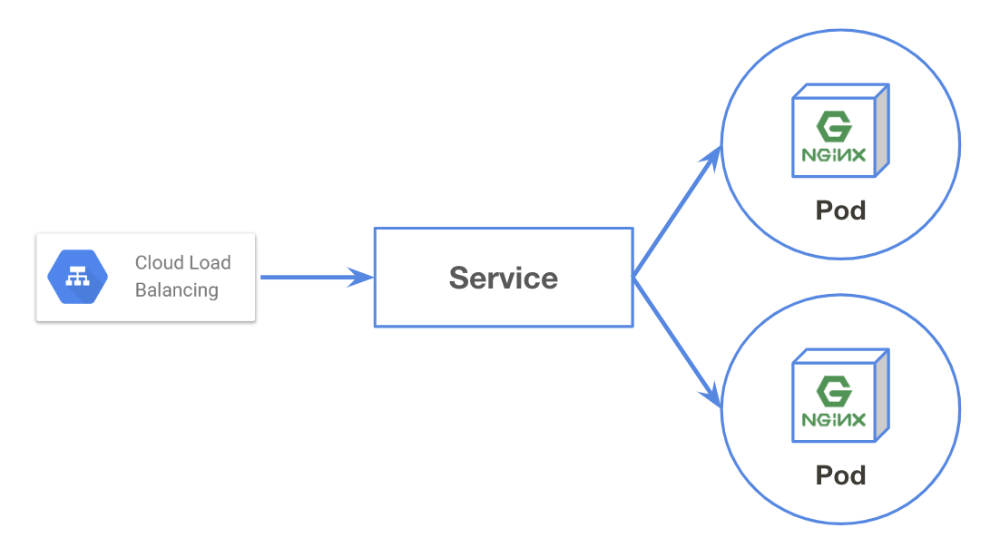

Ingress

Ingressとは¶
ロードバランサとしての機能を提供するObjectです。
Ingressは（L7）ロードバランサとしての機能を持ち、受け付けたトラフィックをServiceへルーティングします。
GKEの場合マネージドロードバランサであるGoogle Cloud Load Balancer（以降GCLB）との連携を簡単に行えるので、今回はGCLBの使用を前提とします
作成する¶
（IngressはCLIからの作成に対応していないため、）Manifestを用意します。
ingress.yaml というファイルを作成しましょう。
$ vi ingress.yaml
# 2台のnginxを立ち上げるDeployment apiVersion: apps/v1 kind: Deployment metadata: labels: app: mynginx name: mynginx spec: replicas: 2 selector: matchLabels: app: mynginx template: metadata: labels: app: mynginx spec: containers: - image: nginx:latest name: mynginx ports: - containerPort: 80 --- # "mynginx"という名前のtype: NodePortのServiceを作成 apiVersion: v1 kind: Service metadata: labels: app: mynginx name: mynginx spec: ports: - port: 80 protocol: TCP targetPort: 80 selector: app: mynginx type: NodePort --- # "mynginx" Serviceへトラフィックを振り分けるロードバランサを作成 apiVersion: extensions/v1beta1 kind: Ingress metadata: name: mynginx spec: backend: serviceName: mynginx servicePort: 80
$ kubectl apply -f ingress.yaml
確認してみる¶
Podが配置されていることを確認しましょう
$ kubectl get all NAME READY STATUS RESTARTS AGE pod/mynginx-5c7cb97c48-gkcn7 1/1 Running 0 3m21s pod/mynginx-5c7cb97c48-wmlx4 1/1 Running 0 3m22s NAME TYPE CLUSTER-IP EXTERNAL-IP PORT(S) AGE service/kubernetes ClusterIP 10.4.0.1 <none> 443/TCP 65m service/mynginx NodePort 10.4.5.246 <none> 80:32347/TCP 40m NAME DESIRED CURRENT UP-TO-DATE AVAILABLE AGE deployment.apps/mynginx 2 2 2 2 40m NAME DESIRED CURRENT READY AGE replicaset.apps/mynginx-5c7cb97c48 2 2 2 3m22s
Ingressは kubectl get ingress で取得することができます。
$ kubectl get ingress NAME HOSTS ADDRESS PORTS AGE mynginx * <YOUR ADDRESS> 80 41m
ADDRESSへ表示されたIPへ接続して、nginxが起動していることを確認しましょう。
お片付け¶
$ kubectl delete -f ingress.yaml